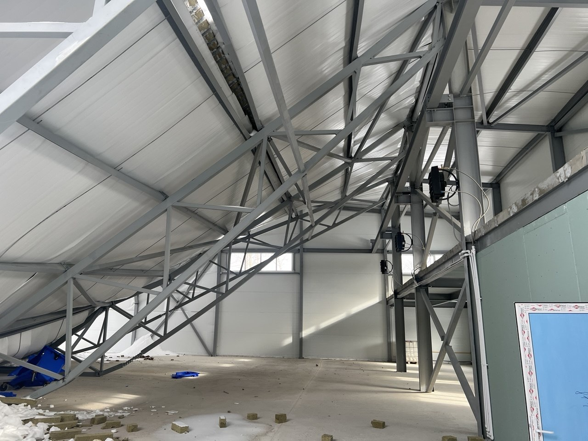
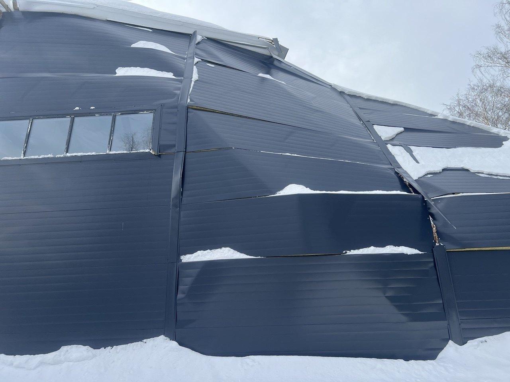
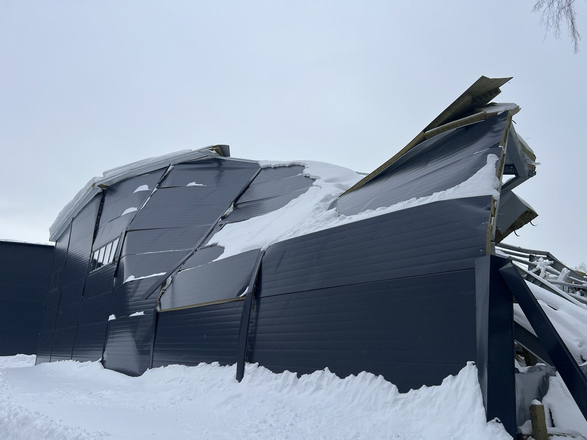
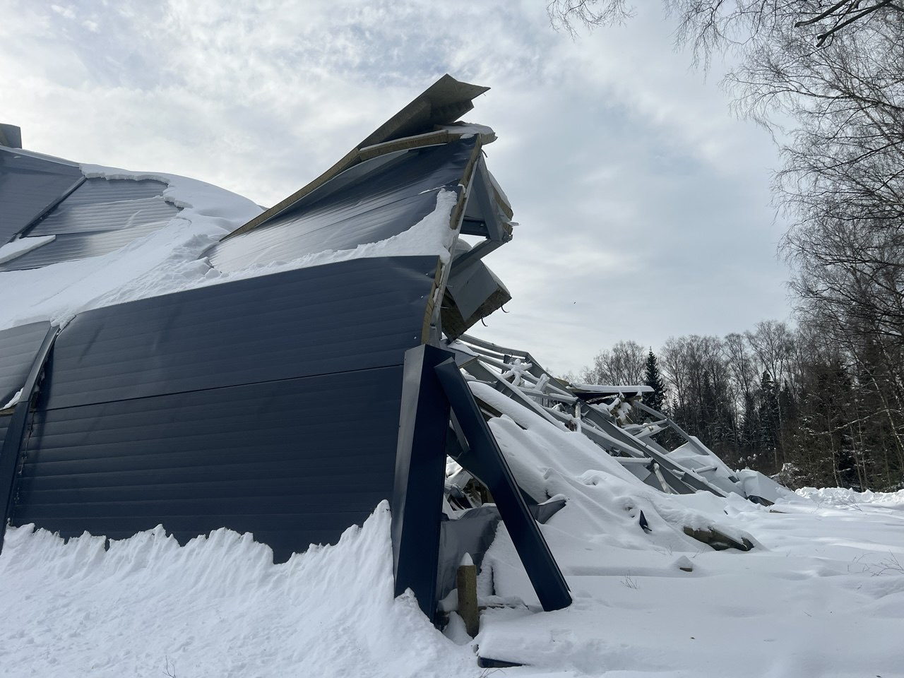
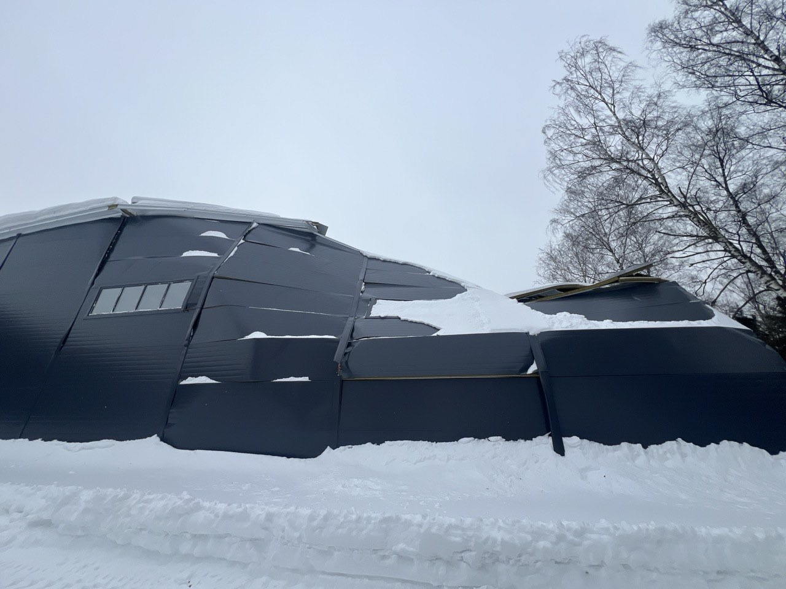
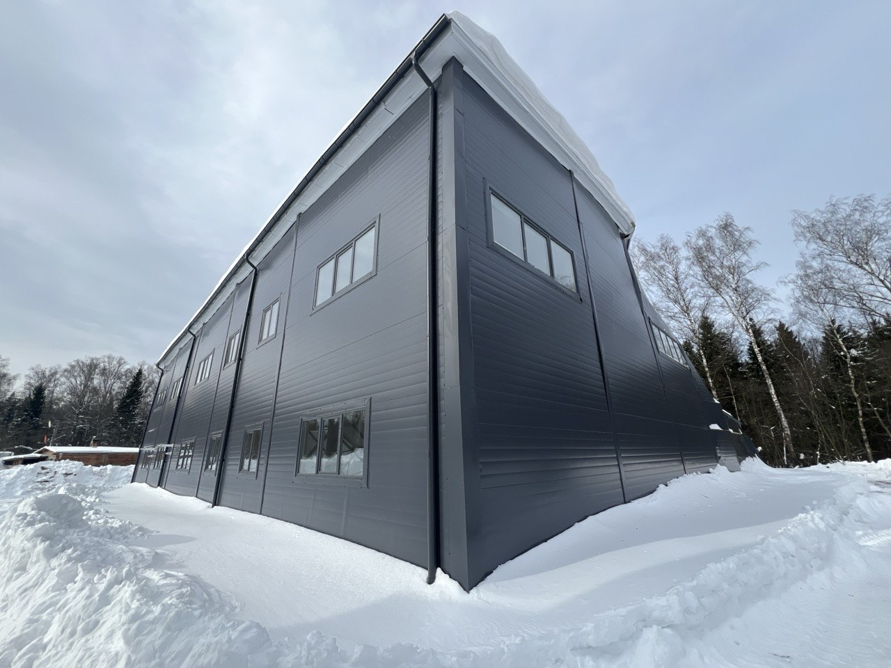
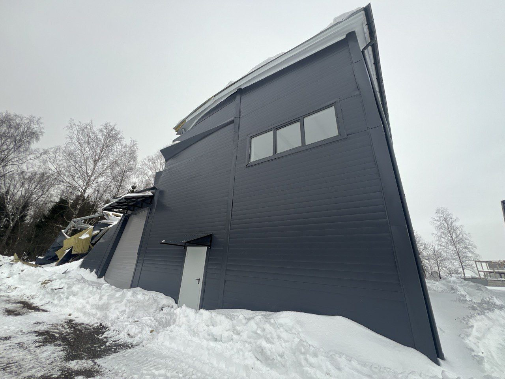
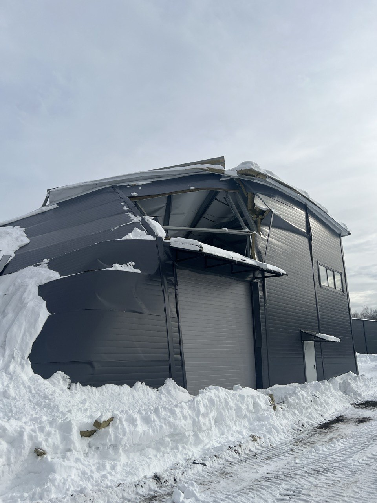

Инцидент со складом №1: причины и план действий
Хронология и причины инцидента
19 февраля 2026 года на первом складе просела крыша и частично повредились стены. Причиной стала комбинация погодных условий и выявленные позже строительные недочёты.
Сразу после инцидента была вызвана экспертиза. В течение трёх недель проведены две независимые экспертизы, которые однозначно указали на отступления от проекта со стороны подрядчика.
Снеговая нагрузка не являлась причиной: замеры показали 1,5–1,8 кПа при расчётном лимите 2,1 кПа для региона. Крыша неэксплуатируемая и не требовала очистки от снега.
Два других склада (№2 и №3) были построены другими подрядчиками и проектными организациями. Дополнительная проверка по ним проводится, критических отклонений не выявлено.
Результаты экспертиз
Обе экспертизы — АНО «ИЦСЭ Ресурс точности» (№4056/С, 23.03.2026) и ООО «Экспертное Бюро Альфа» (№3, март 2026) — пришли к одинаковым выводам: потеря пространственной устойчивости каркаса из-за дефектов строительства.
Главный вывод: сечение несущих металлоконструкций не соответствовало проекту. Подрядчик изготовил их на своём заводе, предоставил недостоверную документацию — выявить нарушения без разрушающих испытаний было невозможно.
Выявленные дефекты:
- Металл ненадлежащего качества: толщина стенки верхнего пояса ферм 3,80–3,96 мм вместо проектных 6,0 мм (дефицит 34–37%); раскосы 80×3 — 2,8 мм вместо 3,0 мм; часть раскосов 100×4 отсутствовала полностью.
- Болты неправильного класса: установлены болты класса 5.8 вместо требуемых 10.9 (прочность вдвое ниже), болты растянулись, в узлах образовались зазоры.
- Самовольная замена анкеров: проектные закладные анкеры А1 заменены на химические «Химтраст» без согласования с ГИПом и без испытаний при отрицательных температурах.
- Недозабив свай: несущая способность снижена с 12 до 7 тонн без контрольных испытаний, что привело к неравномерной осадке и начальному крену каркаса.
- Смещение ростверка по оси Ж — создало эксцентриситет нагрузки.
- Снегозадержатели установлены строителями без расчёта горизонтальной нагрузки (в проекте их не было).
- Фальсификация документации: акты скрытых работ с чужим адресом, сертификаты на металл датированы 2018 годом при стройке 2024 года, на ключевой элемент (труба 180×140 мм) сертификата нет вообще.
План действий и переговоры с подрядчиком
Команда проекта однозначно считает вину лежит на подрядчике. Основная стратегия — восстановление объекта по гарантии, так как действует двухлетний гарантийный срок по договору подряда.
На следующей неделе запланирована встреча с подрядчиком и юристами. Цель — обсудить добровольное восстановление объекта. Если подрядчик откажется, будут задействованы все судебные инструменты для взыскания средств.
Команда проекта понимает, что ресурсов подрядчика может не хватить, и готова частично содействовать процессу финансово, чтобы избежать длительных судебных разбирательств и ускорить восстановление.
В случае достижения соглашения первым шагом станет дополнительная геодезическая экспертиза для определения, какие конструкции можно сохранить. Затем будет разработан новый проект реконструкции или ремонта.
Фото с места инцидента








Вопросы инвесторов и позиция команды
Инвесторы выразили обеспокоенность по поводу перекладывания ответственности и потребовали разъяснений. Спикеры подчеркнули, что они не снимают с себя ответственность, а лишь объясняют причины инцидента. Проблема с подрядчиком — это их внутренняя проблема.
О банкротстве подрядчика: Команда осознаёт риск. Для минимизации рассматривается вариант частичного финансирования закупки материалов собственными средствами, поручая подрядчику только работы. Это сделает сотрудничество более привлекательным для подрядчика, чем банкротство и судебные тяжбы.
У команды проекта имеется достаточный финансовый запас прочности, поскольку это не единственный их проект. Они готовы финансировать восстановление из собственных средств, чтобы выполнить обязательства перед инвесторами.
Срок восстановления оценивается примерно в 6 месяцев, но с поправкой на возможные обстоятельства. Инвесторы скептически относятся к этому сроку, ожидая, что он может затянуться до года и более.
Перспективы для инвесторов и дальнейшая коммуникация
Договоры купли-продажи будущей вещи продлены, обязательства сохраняются. Основной вопрос — от кого брать компенсацию затрат на восстановление.
Ликвидность долей первого склада снизилась. Команда готова предложить инвесторам:
- Перекупить доли у тех, кто хочет выйти (возможно, с дисконтом).
- Предложить доли инвесторам из своей базы, не участвующим в этом проекте.
Сдача в аренду второго и третьего складов продолжается. Клиентам сообщается, что первый склад находится на ремонте.
Коммуникация: Планируется проводить собрания ежемесячно (ранее было раз в три месяца), а также предоставлять информацию для дальнейшего распространения.
Важная веха: Следующая ключевая точка — встреча с подрядчиком и юристами. По итогам будет понятна «дорожная карта» по восстановлению.
Инвесторы могут получить заключение экспертизы по запросу. Договор займа заключён с физическим лицом Павлом Кунцовым, что делает его ответственным по обязательствам.